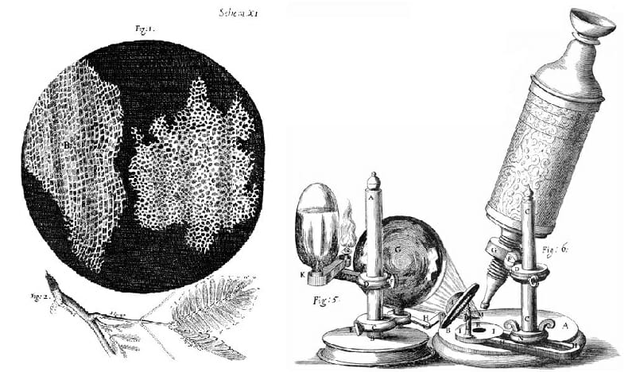
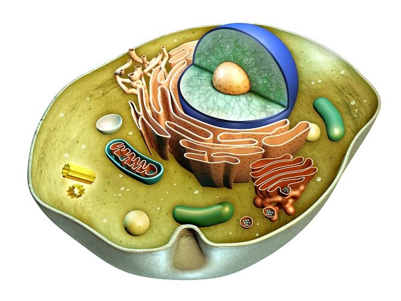

Stanica je osnovna građevna, funkcionalna i reprodukcijska jedinica života; najniža organizacijska razina sa svojstvima živoga sustava. Život na Zemlji temelji se na staničnoj organizaciji; sva su živa bića građena od jedne ili više stanica.
Zajedničko svim stanicama je:stanica uvijek nastaje iz stanice, svaka stanica ima kompletnu genetičku informaciju pohranjenu u DNA, centralna dogma molekularne biologije vrijedi za sve stanice (DNA > RNA > proteini), identična reduplikacija DNA, membrana - granica između stanice i okoliša, ATP kao izvor energije, izmjena tvari (enzimi, regulacija)
Razlikuju se dva osnovna tipa stanica: prokariotske i eukariotske.
Stanice su vrlo sitne, pa su prvi put uočene tek nakon izuma mikroskopa. Naziv stanica uveo je engl. prirodoslovac R. Hooke (1665), koji je mikroskopom vlastite izradbe promatrao tanke presjeke pluta i uočio stijenke mrtvih biljnih stanica. Približno istodobno, niz. prirodoslovac A. van Leeuwenhoek svojim je jednostavnim mikroskopom promatrao žive stanice, spermije i mikroorganizme, te otkrio do tada nepoznat mikrosvijet. Pošto su se svjetlosni mikroskopi i tehnike mikroskopiranja usavršili, škot. botaničar R. Brown (1831) otkrio je staničnu jezgru, češ. fiziolog J. Purkyně (1837) opisao je protoplazmu, a njem. prirodoslovci M. J. Schleiden (1838) i Th. Schwann (1839) zaključili su da su biljke i životinje izgrađene od stanica i tako postavili staničnu teoriju.
Slika 1. Hookove stanice i mikroskop
U drugoj pol. XIX. st. proučavala se dioba stanica, te su otkriveni kromosomi. Izum elektronskoga mikroskopa 1930-ih omogućio je upoznavanje sitnih (manjih od 0,5 μm) staničnih ultrastruktura: citoplazmatskih membranskih sustava i ribosoma. Uz elektronsku mikroskopiju napredovala je i svjetlosna mikroskopija, napose razvojem fluorescencijskoga mikroskopa i konfokalnoga laserskog mikroskopa, a računalna obradba slike i analiza podataka omogućile su prikaz proteinskih niti staničnoga kostura, diobenoga vretena i molekularnih biljega u staničnim membranama. Za biokemijske i fiziološke analize staničnih sastojaka primjenjuje se metoda staničnoga frakcioniranja, tj. izdvajanja pojedinih organela ili sitnijih dijelova stanice u frakcije. Kultura stanica omogućuje istraživanje živih stanica, koje rastu, dijele se i obavljaju svoju funkciju u hranidbenoj otopini, odvojeno od matičnoga organizma; djelovanje biološki aktivnih tvari (hormona, regulatora rasta, lijekova, otrovnih tvari) na stanicu lakše se prati u kulturi nego na razini organizma, u kojem postoji složeno međudjelovanje milijuna stanica. U istraživanju stanica primjenjuju se i radionuklidi, kojima se prati put i mjesto sinteze makromolekula u stanici. Istraživanjem stanica bave se stanična biologija i citologija.
Stanice se međusobno razlikuju po obliku i veličini, ali sve imaju sličan kem. sastav, organizaciju i metaboličke puteve. Žive sustave izgrađuju isti kem. elementi koji se nalaze i u neživoj prirodi. Najzastupljeniji su ugljik, vodik, dušik, kisik, fosfor, sumpor, kalcij, magnezij, natrij i željezo. Velik dio stanične mase čini voda (približno 70%). Stanice su izgrađene od četiriju osnovnih skupina org. molekula: bjelančevina, lipida, ugljikohidrata i nukleinskih kiselina. Svaka stanica omeđena je membranom, a u unutrašnjosti ima citoplazmu i DNA, u kojoj je pohranjena genetička informacija. Stanična membrana odvaja sadržaj stanice od okoliša. U jednostaničnih organizama sve se funkcije (prehrana, razmnožavanje, kretanje, reagiranje na podražaj) obavljaju u jednoj stanici. Složeniji organizmi izgrađeni su od skupina stanica kojima je djelovanje usklađeno, a različite stanice specijalizirane su za izvršavanje određenih funkcija. U životinja se nalazi mnogo više različitih vrsta stanica nego u biljaka. Primjerice, ljudsko tijelo izgrađuje više od 200 različitih vrsta stanica, od kojih je svaka specijalizirana za neku posebnu funkciju (npr. pamćenje, vid, kretanje, probavu).
Slika 2. Model životinjske stanice